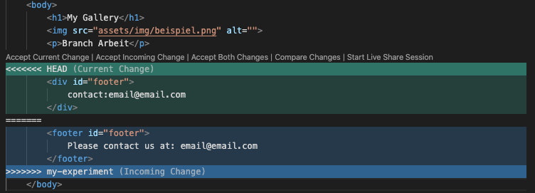

pwd

Display path of current working directory
Display path of current working directory

Change directory to (Directory)

List directory contents

Create new directory named (Directory)

Update file access & modification time and create (File) if it doesn't exist

Delete (File)

Delete (Directory)

Delete (Directory)

Rename (File) to (NewFile)

Move (File) to (Directory)

Copy (File) named (NewFile)

Copy (File) to (Directory)
Create empty Git repo in specified directory.
List which files are staged, unstaged, and untracked.
Stage all changes in (directory) for the next commit.
Commit the staged snapshot, but instead of launching a text editor, use (name) as the commit message.
Display the entire commit history using the default format. For customization see additional options.
Condense each commit to a single line.
Show unstaged changes between your index and working directory.
List all of the branches in your repo. Add a (name) argument to create a new branch with the name (name).
Delete (name) branch
Check out a new branch named (name).
Merge (name) into the current branch.
Push the branch to (remote), along with necessary commits and objects. Creates named branch in the remote repo if it doesn’t exist.
Fetch the specified remote’s copy of current branch and immediately merge it into the local copy.